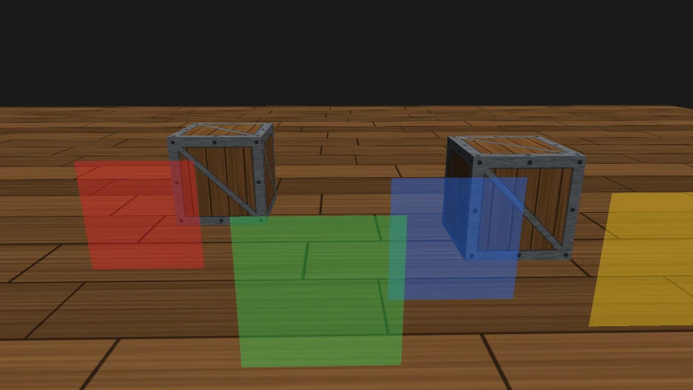

Advanced Metal
Blending#
Blending is how transparency is done. Instead of replacing the color already in the texture, a new fragment's color is combined with it. The fourth color component, alpha, usually controls how: 1 is fully opaque, 0 is fully transparent.
Discarding fragments#
Some images are either fully opaque or fully transparent, like a grass or leaf texture with a cut-out shape. They need no blending. The fragment function can simply throw the transparent fragments away:
fragment float4 fragment_cutout(VertexOut in [[stage_in]],
texture2d<float> colorTexture [[texture(0)]],
sampler textureSampler [[sampler(0)]]) {
float4 color = colorTexture.sample(textureSampler, in.uv);
if (color.a < 0.1) {
discard_fragment();
}
return color;
}
A discarded fragment writes neither color nor depth. Load such textures with a sampler that uses .clampToEdge; with .repeat, linear filtering blends the top row with the bottom row and leaves a faint line at the edge.
On tile-based GPUs, discard_fragment prevents some hidden-surface optimizations, so use it only in the pipelines that need it.
The blend equation#
For semi-transparent surfaces such as glass, the pipeline computes
result = source * sourceFactor (op) destination * destinationFactor
where source is the fragment function's output and destination is the color already stored. In Metal, blending is part of the render pipeline state, configured per color attachment:
let attachment = pipelineDescriptor.colorAttachments[0]!
attachment.isBlendingEnabled = true
attachment.rgbBlendOperation = .add
attachment.alphaBlendOperation = .add
attachment.sourceRGBBlendFactor = .sourceAlpha
attachment.destinationRGBBlendFactor = .oneMinusSourceAlpha
attachment.sourceAlphaBlendFactor = .one
attachment.destinationAlphaBlendFactor = .oneMinusSourceAlpha
This is classic alpha blending: result = source * alpha + destination * (1 - alpha). A red window with alpha 0.5 in front of a green wall gives an even mix of both.
Some other useful setups:
| Effect | Source factor | Destination factor |
|---|---|---|
| Alpha blending | .sourceAlpha |
.oneMinusSourceAlpha |
| Premultiplied alpha | .one |
.oneMinusSourceAlpha |
| Additive (fire, glow) | .one or .sourceAlpha |
.one |
| Multiply (tint, shadow) | .destinationColor |
.zero |
Coming from OpenGL
There is no glEnable(GL_BLEND) to toggle between draws. You create one pipeline state for opaque drawing and another for blended drawing, and switch pipeline states.
Premultiplied alpha
Many image loaders, Core Graphics included, deliver colors already multiplied by their alpha. Blending such a texture with .sourceAlpha darkens the edges. Use .one as the source factor for premultiplied content.
Order matters#
Blending and the depth buffer do not cooperate. If a window is drawn first, it writes its depth, and anything drawn later behind it is rejected by the depth test, even though it should be visible through the glass. The rule for a correct image:
- Draw all opaque objects first.
- Sort the transparent objects by distance from the camera.
- Draw them back to front, with depth testing on and depth writing off.
let sortedWindows = windowPositions.sorted {
distance_squared(camera.position, $0) > distance_squared(camera.position, $1)
}
encoder.setRenderPipelineState(blendPipelineState)
encoder.setDepthStencilState(depthTestNoWriteState)
for position in sortedWindows {
uniforms.model = float4x4(translation: position)
encoder.setVertexBytes(&uniforms, length: MemoryLayout<Uniforms>.stride, index: 1)
encoder.drawPrimitives(type: .triangle, vertexStart: 0, vertexCount: 6)
}
Sorting by object distance is not perfect. Intersecting or very large transparent surfaces can still blend in the wrong order. Techniques that remove the need for sorting are grouped under the name order-independent transparency. Apple GPUs make one family of them practical through programmable blending, where a fragment function can read the current color of the pixel it is writing; you will meet that feature in Deferred Shading.

Exercises#
- Render grass quads with
discard_fragment, then with blending but no sorting, and compare the edges. - Draw the windows front to back to see the artifact that sorting prevents.
- Make an additive particle pipeline and draw a few overlapping quads.